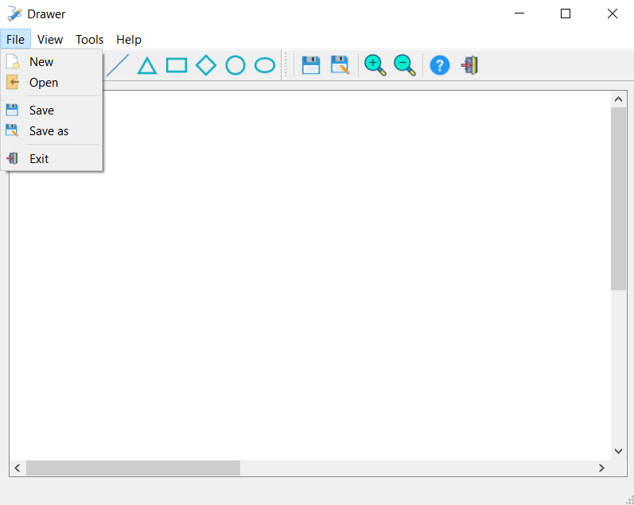
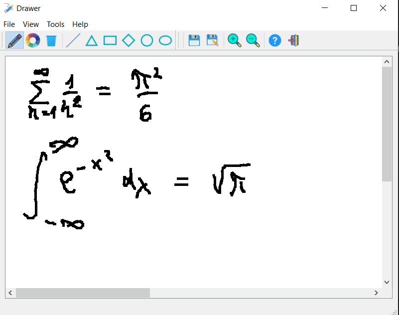
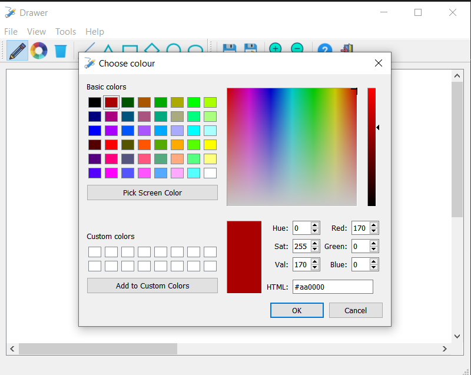
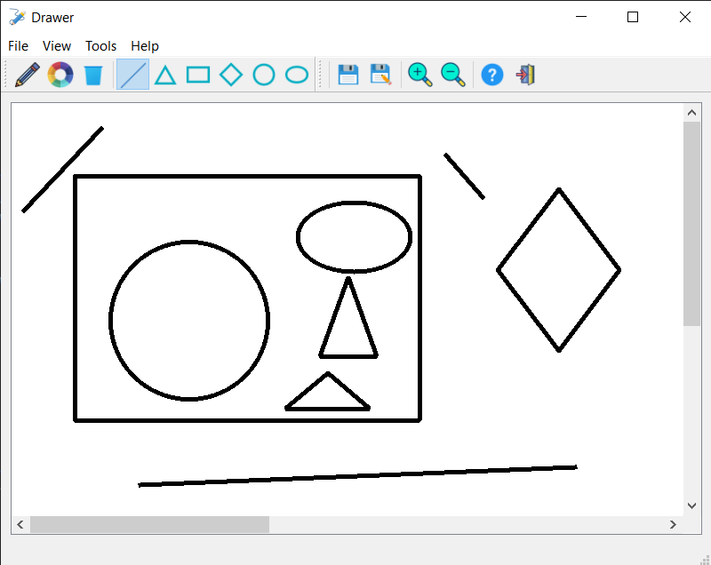
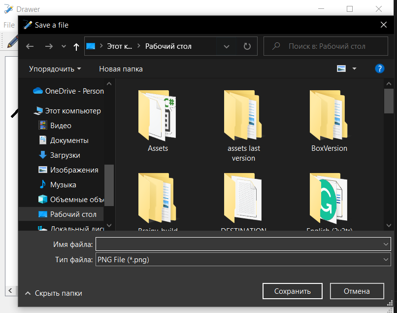

Press "New" to create new file;
Press "Open" to open external file;
Press "Save" to save current file;
Press "Save as" to save current file with adress clarification;
Press "Exit" to stop the program;
All other tools in the following items : View, Tools, Help, are present in the toolbar beneath
Select the tool and draw!
Click the "Colour chooser" button and choose the colour.
Click the "Clearing tool" button and the canvas will get cleared.
Choose the shape you want
Then click and move your mouse to draw the shape
Once you release the mouse button, the shape will be drawn.
When you have drawn all you want or just want to save you progress, click "Save" button
If you haven't saved yet, you will need to choose the location of tour file save.
If you have saved your progress before, the progress will be automatically saved to pre-chosen location
In case you want to change the location, click on "Save as" button and choose the path you want.
If you want to scale your image chose one of the scaling tools
"+" means zooming-in
"-" means zooming-out
Press "Help" tool button to read the instruction to the program
Press "Exit" button to shut the program down